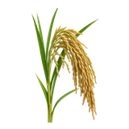

होम / धान

धान का भाव आज | Paddy Mandi Price Today
धान के आज के उपलब्ध मंडी भाव देखें—कोटा, शाहाबाद, रामगंज मंडी और बारां के मॉडल, न्यूनतम और अधिकतम रेट।
नीचे मंडी-वार सूची में धान के उपलब्ध भाव दिए हैं। मंडी के नाम पर क्लिक करके उस मंडी की दूसरी फसलों के भाव भी देख सकते हैं।
धान का भाव कैसे देखें और रेट किन बातों से बदलता है
धान बिना मिल वाला paddy है और इसे चावल के भाव से अलग समझना चाहिए। किस्म, नमी और मिलिंग के लिए उपयुक्तता के अनुसार इसकी मंडी कीमत बदल सकती है।
आज का धान भाव कैसे देखें
इस पेज की मंडी-वार तालिका में न्यूनतम, मॉडल और अधिकतम भाव देखें। अपनी नज़दीकी मंडी तथा उपलब्ध दूसरी मंडियों के भाव की तुलना करके फैसला लेना अधिक उपयोगी रहता है।
- अपनी मंडी या राज्य चुनकर भाव देखें।
- न्यूनतम, मॉडल और अधिकतम भाव में अंतर समझें।
- पुराने और नए उपलब्ध रिकॉर्ड में फर्क देखकर निर्णय लें।
गुणवत्ता और ग्रेड का असर
धान में किस्म, नमी, भरे दाने, सफाई और टूटे या हल्के दानों का अनुपात खरीददार के लिए महत्वपूर्ण होता है। अलग किस्मों की तुलना एक ही भाव में नहीं करनी चाहिए।
आवक, मांग और बाजार
कटाई के समय नई आवक, राइस मिलों की खरीद और सरकारी खरीद की प्रक्रिया धान बाजार को प्रभावित कर सकती है। MSP धान की सरकारी खरीद के संदर्भ में होता है।
धान बेचने या खरीदने से पहले ध्यान रखें
- धान और चावल के भाव अलग-अलग देखें।
- किस्म लिखकर ही नज़दीकी मंडियों की तुलना करें।
- नमी और सफाई की शर्तों की जानकारी पहले लें।
अक्सर पूछे जाने वाले सवाल
1 कुंटल धान की कीमत क्या है?
देश की विभिन्न मंडियों में 1 क्विंटल धान का मॉडल भाव (वह भाव जिस पर सबसे ज्यादा मात्रा में फसल का व्यापार हुआ हो) किस्म और गुणवत्ता के आधार पर अलग-अलग है। सामान्य धान का न्यूनतम समर्थन मूल्य (MSP) लगभग ₹2,441 से ₹2,461 प्रति क्विंटल तय किया गया है, जबकि बासमती व अन्य प्रीमियम किस्मों (जैसे 1121 या 1509) के मॉडल भाव मंडियों में ₹3,500 से ₹4,500 प्रति क्विंटल या उससे अधिक तक चल रहे हैं। सटीक और ताज़ा रेट देखने के लिए कृपया पेज को ऊपर स्क्रॉल करें।
Dhan 1121 mandi bhav today
The minimum, maximum, and modal prices (the price at which the highest volume of produce was traded) for 1121 paddy (dhan) in major mandis are updated in the table at the top of the page. Please scroll up to check the current rates.
Dhan Mandi Bhav Today
The minimum, maximum, and modal prices (the price at which the highest volume of produce was traded) for paddy (dhan) across major mandis are updated in the table at the top of the page. Please scroll up to check the current rates.